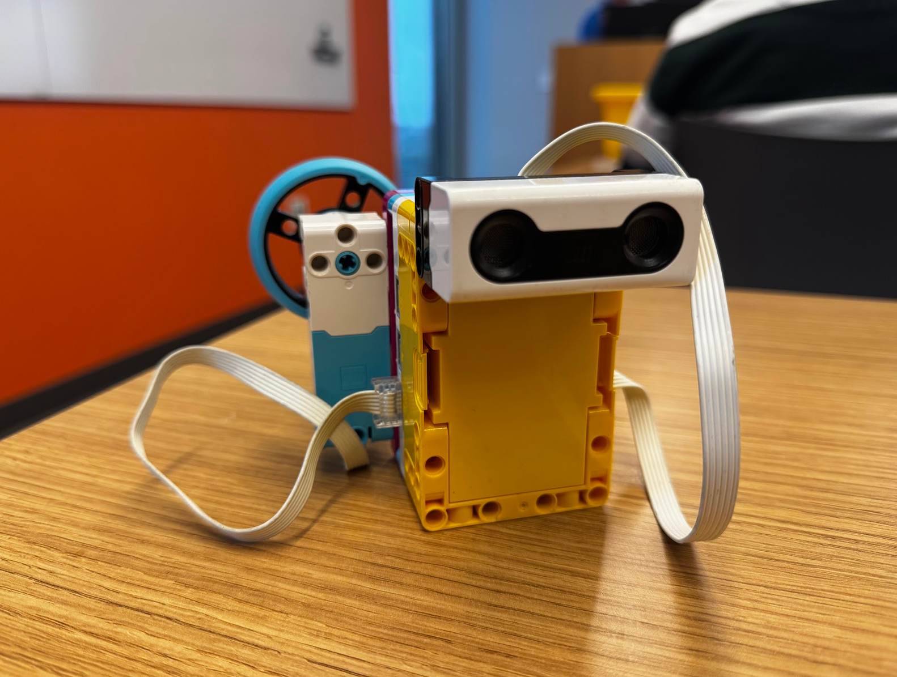
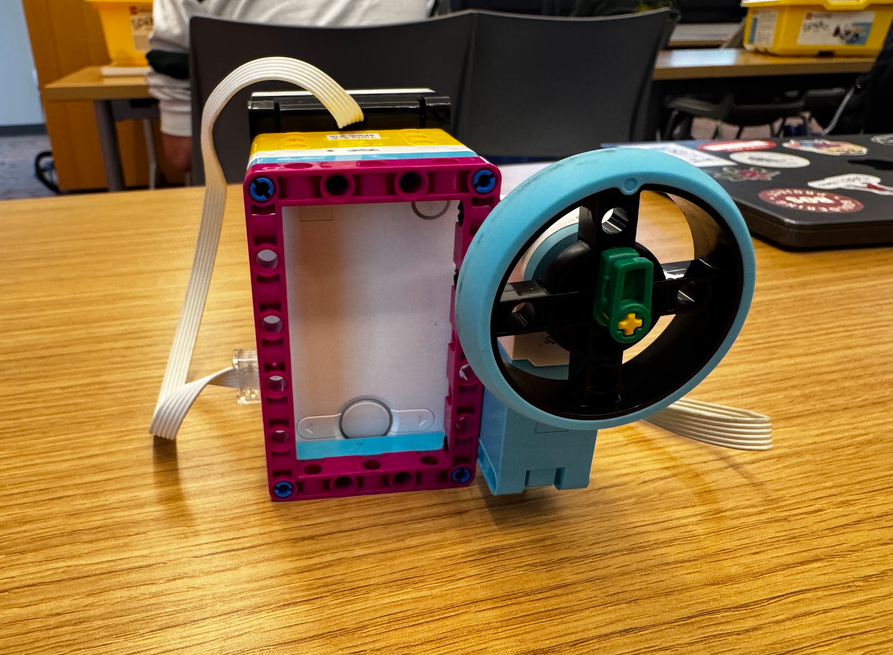

I built this supervised classification design in collaboration with my peer Khang Ngo. The design is very similar to one presented by my professor, Ethan Danahy. It uses distance measurements to classify objects as tall or short.
During training, I record five distance samples. I label each sample by turning the motor left for a tall object or right for a short object. When measuring a new object, the program compares its distance reading with the saved samples and uses the label from the nearest neighbor. The motor then turns left for tall or right for short.
The distance sensor is connected to port E, and the medium motor is connected to port F.

# Setup: Distance Sensor on port E; Medium Motor on port F.
# Press the LEFT hub button after positioning each object.
from hub import port, button
import runloop
import motor
import distance_sensor
EXAMPLE_COUNT = 5
START_POSITION = 90
LABEL_LIMIT = 40 # Turn at least 40 degrees from 90 to give a label.
PREDICTION_TURN = 90
MOTOR_SPEED = 200
async def main():
# Collect five examples.
example_distances = []
example_labels = []
# Put the motor at the starting position before the first example.
await motor.run_to_absolute_position(
port.F, START_POSITION, MOTOR_SPEED
)
while len(example_distances) < EXAMPLE_COUNT:
# Measure the manual turn relative to the 90-degree position.
motor.reset_relative_position(port.F, 0)
print("Example", len(example_distances) + 1)
print("Turn left for tall or right for short.")
print("Place the sensor above the object, then press LEFT.")
# Wait for the button press.
while not button.pressed(button.LEFT):
await runloop.sleep_ms(10)
# Read the distance and motor turn from the starting position.
measured_distance = distance_sensor.distance(port.E)
turn_from_start = motor.relative_position(port.F)
print("Distance:", measured_distance, "mm; turn:", turn_from_start)
# A failed reading does not count toward the five examples.
if measured_distance == -1:
print("No object detected. Try this example again.")
elif turn_from_start <= -LABEL_LIMIT:
example_distances.append(measured_distance)
example_labels.append("tall")
print("Saved: tall")
elif turn_from_start >= LABEL_LIMIT:
example_distances.append(measured_distance)
example_labels.append("short")
print("Saved: short")
else:
print("Turn farther left or right, then try again.")
# Wait until the button is released before returning to 90 degrees.
while button.pressed(button.LEFT):
await runloop.sleep_ms(10)
await motor.run_to_absolute_position(
port.F, START_POSITION, MOTOR_SPEED
)
# Classify new objects.
print("Five examples saved. Press LEFT for each new object.")
while True:
# Wait to place an object and press the button.
while not button.pressed(button.LEFT):
await runloop.sleep_ms(10)
measured_distance = distance_sensor.distance(port.E)
if measured_distance == -1:
print("No object detected. Try again.")
else:
# Find the saved example with the nearest distance.
closest_index = 0
smallest_difference = abs(
measured_distance - example_distances[0]
)
for index in range(1, EXAMPLE_COUNT):
difference = abs(
measured_distance - example_distances[index]
)
if difference < smallest_difference:
smallest_difference = difference
closest_index = index
# Turn left for tall or right for short.
if example_labels[closest_index] == "tall":
print(measured_distance, "mm: tall")
await motor.run_for_degrees(
port.F, -PREDICTION_TURN, MOTOR_SPEED
)
else:
print(measured_distance, "mm: short")
await motor.run_for_degrees(
port.F, PREDICTION_TURN, MOTOR_SPEED
)
# Leave the answer visible briefly, then return to 90 degrees.
await runloop.sleep_ms(1000)
await motor.run_to_absolute_position(
port.F, START_POSITION, MOTOR_SPEED
)
# Require a new press for the next object.
while button.pressed(button.LEFT):
await runloop.sleep_ms(10)
runloop.run(main())